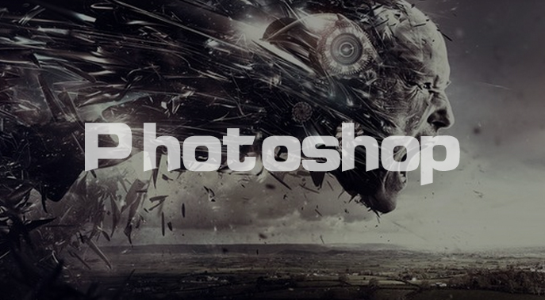

网页设计软件列表（点击查看）
- 
- Photoshop一款好到违反广告的 超S级设计神器！给画面来点动感吧。
- Photoshop 处理像素构成的图像，可以有效的进行图片编辑调整工作。
- Photoshop有很多功能，在图像，图形，文字出版等个方面都有涉及。
- 在制作建筑效果图包括许三维景时，常常需要在Photoshop进行调整。

- ILLustrator 是一种应用出版，多媒体和在线图像的标准量插画的软件。
- ILLustrator 广泛应用于印刷出版，海报书籍，专业插画，多媒体图像处理。
- ILLustrator 可以为线搞提供比较高的精度和控制，简单到复杂项目都能生产。
- 跟居不完全统计全球大约有37%的界面设计在使用ILLustrator进行设计。

- Dreamweaver 是第一套针对专业网页设计师特别发展的页面开发工具。
- 利用他可以轻易的制作出跨越浏览器限制的充满动感的页面。
- Dreamweaver 自MX版本开始，使用了Opera的排版引擎作为网页预览。
- Dreamweaver 可以在AdobeCretiveSuite4的不同组件之间切换工作。

- Fireworks是Adobe推出的一款网页作软件，可以加速Web设计开发。
- Fireworks 是一款创建优化Web图像和快速构建网站与Web界面的工具。
- Fireworks可以创建和编辑图像与位图像，并导入PS和AI文件中。
- Fireworks 采用与PS类似的曾图结构来管理圆型，更易组织Web页面。